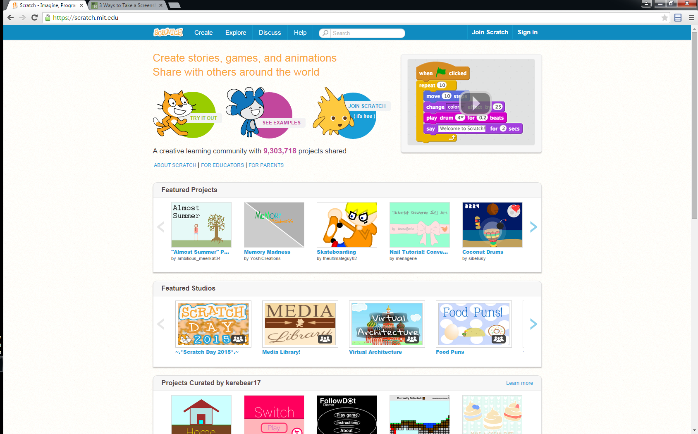
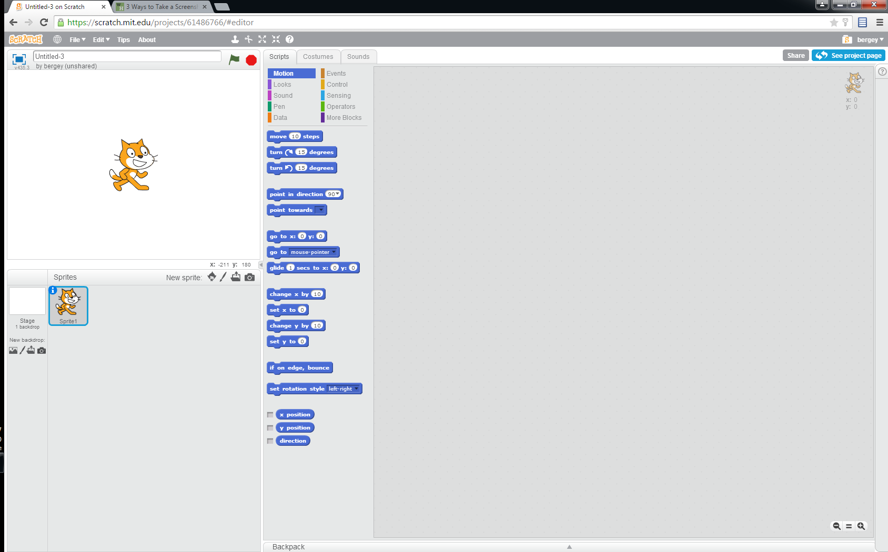
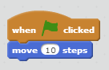
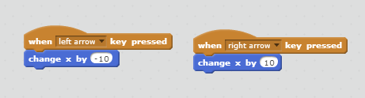

Scratch
A drag-and-drop programming environment for learning to program.
scratch.mit.edu
Getting Oriented
At top of page, press Create

Getting Oriented
- Program Area
- Block Selection Area
- Display Area (Stage)
- Sprite Selection

Moving the Cat

- motion -> move 10 steps
- motion -> turn right 90
- events -> Green flag to start program
Explore: Moving the Cat
- Move the Cat forward, then back
- Move the cat around in a square
Responding to Input

- events -> When right arrow key pressed
- motion -> Change x position by 10
- Left arrow - move left by the same amount
Responding to Input: Explore
- Up arrow - move up by the same amount
- Down arrow - move down by the same amount
Add a Background
- Draw a background
- Or import a photo
- Play around
A Second Sprite
- Add a Sprite
- Pick appearance (Costume)
- Drag Sprite around the screen
A Second Sprite
Program the Cheese
- If touching the Cat, looks -> hide
- When Green Flag, looks -> show
Variables
- Data -> New Variable
- Pick a name for the variable - Score
- By default, variable desplays on the screen
Variables
When Space is pressed, add 1 to Score
Variables: Explore
- Add a key to decrease by one
- Add a key to set to zero
Variables & the Cheese
- If Cheese is touching the Cat, add 1 to score
- Then hide
- What happens if we take out the hide?
Variables & the Cheese
- Make a few more copies of the Cheese
- Verify that they have the same program